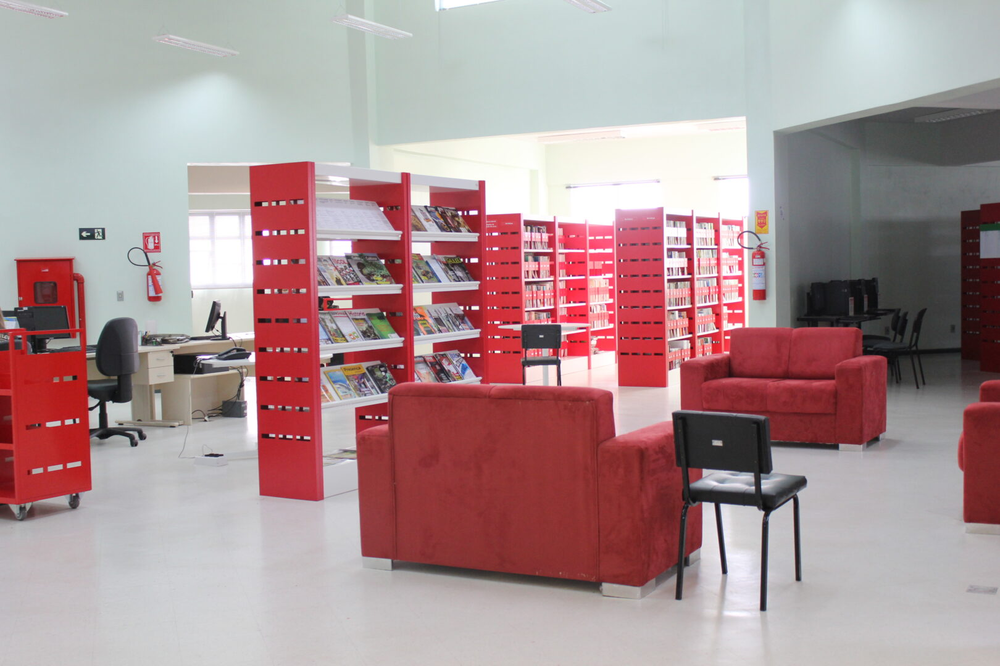

A Biblioteca do IFRS Campus Bento Gonçalves é um espaço importante para a comunidade acadêmica, oferecendo suporte aos estudantes, professores e pesquisadores do instituto. O acervo da biblioteca é composto por livros, periódicos, teses, dissertações, materiais audiovisuais e outros recursos, tanto em formato físico quanto digital.
Horários de atendimento